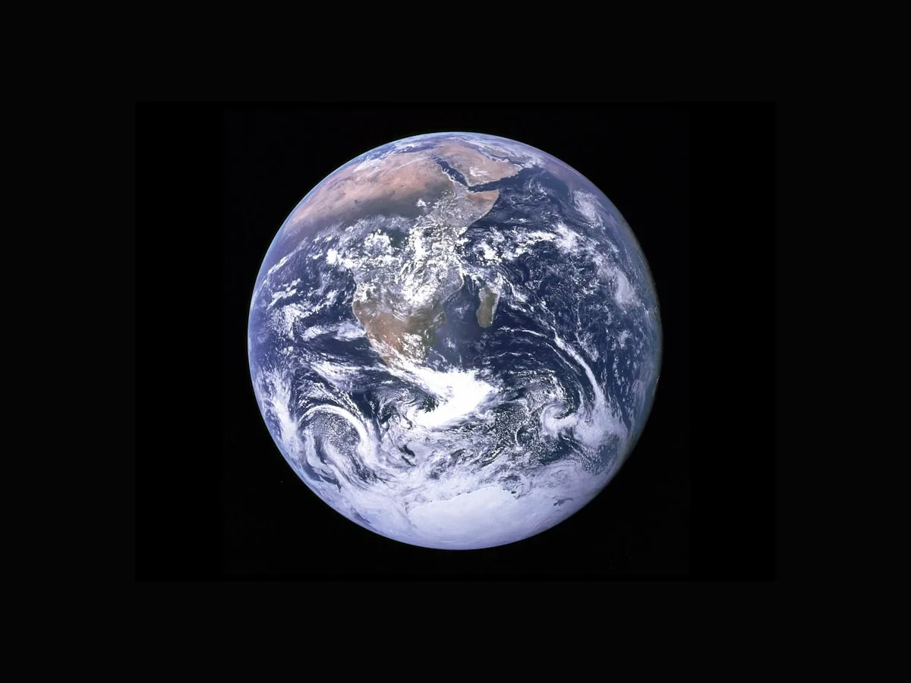
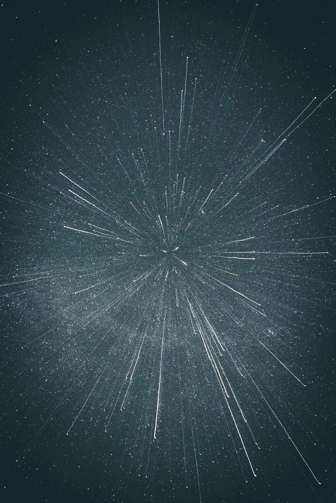
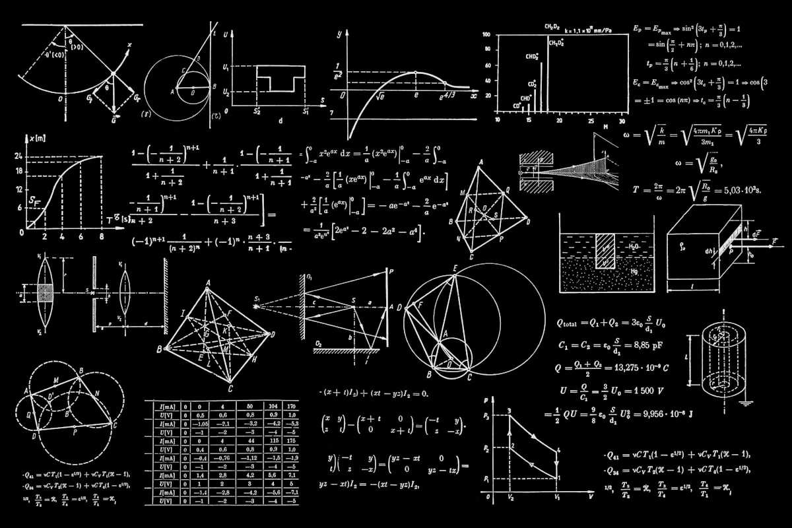
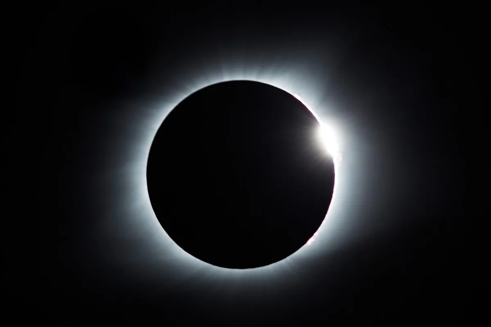

Our Full Mission
Portfolio
From close Earth orbit to the outer reaches of the solar system, Stellaris operates missions across every domain of space science.

Dual-probe solar observation and heliosphere boundary mapping mission. Launched 2021, currently at 0.95 AU inbound trajectory.
Active
Permanent lunar surface research station initiative. Phase 1 lander successfully deployed at Mare Imbrium. Phase 2 crew habitat planned 2027.
Active
Space-based infrared telescope array for stellar nursery observation. Mapping protostellar discs within 500 light-years.
Active
32-satellite climate and environmental monitoring constellation providing real-time atmospheric, ocean, and land surface data.
Active
High-resolution synthetic aperture radar satellite for topographic mapping, disaster monitoring, and urban expansion assessment.
Active
Historic series of 14 Earth-observation and communications satellites launched between 1981 and 2010. Established national orbital capability.
Completed